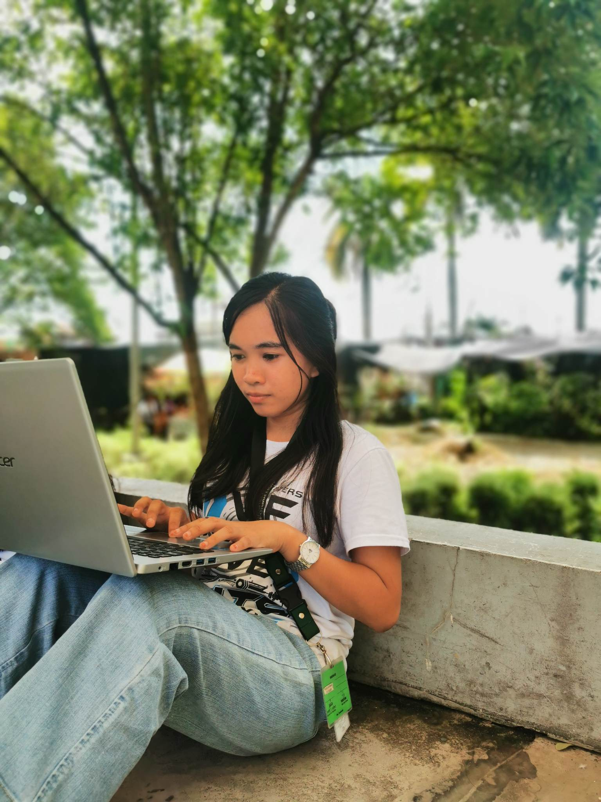
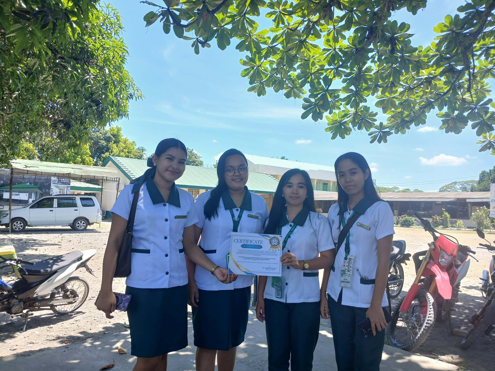
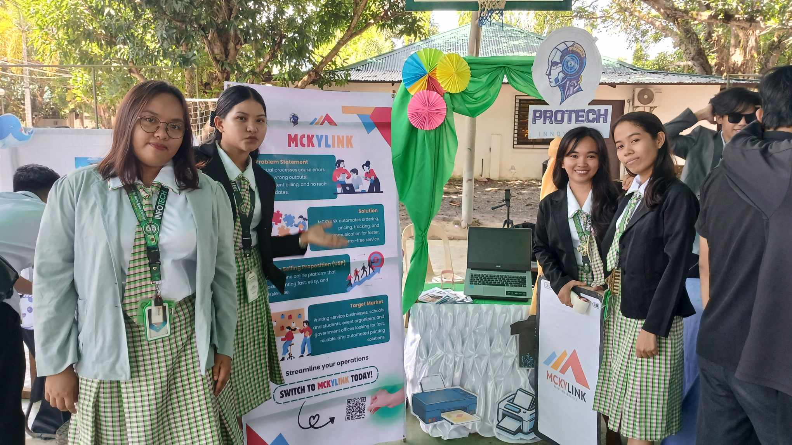
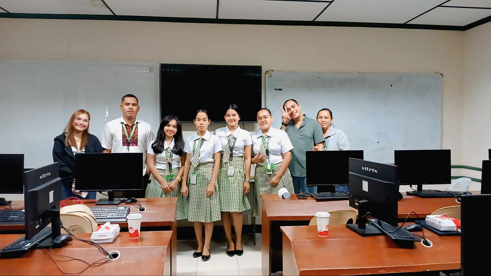

Project Leader | Canva Editor
I lead projects with organization and creativity, while designing visually engaging content using Canva to deliver clear and impactful results.

About Me
I am a Bachelor of Science in Information Technology (BSIT) student at Davao del Norte State College, passionate about creative editing, web design, and team leadership.
I aim to combine creativity, leadership, and technology to contribute meaningfully to projects and organizations while continuously improving my skills.
Get in touchExperience
Davao Del Norte State College · Faculty Association
My responsibilities included designing and editing posters and PowerPoint presentations for faculty use. I also assisted teachers with word-processing tasks, formatting documents, and solving minor technical issues related to printing and file preparation. This experience helped me improve my communication skills, attention to detail, and ability to work in a professional environment.
Skills & Tools
Projects
NavistFind is a smart campus lost-and-found system that uses Natural Language Processing (NLP) to match lost item reports with found item listings through intelligent text analysis. Integrated with Augmented Reality (AR) navigation, it guides users directly to item collection points within the campus — making the retrieval process faster, smarter, and more intuitive.
Designed a comprehensive user manual for the NavistFind lost-and-found system using Canva. The manual covers step-by-step instructions for item reporting, AR navigation, and admin management — crafted with clear visuals, icons, and layouts to ensure ease of use for all campus users.
Certifications
The power of Color in the Graphic Design: Theory, Psychology, and practice.
Journey from Science Practitioner information technology specialist
Cisco Networking Academy program.
Leadership
Moments where I led, organized, and guided my team throughout college projects and capstone development.

Facilitating team discussion and task delegation.

Organizing schedules, tasks, and documentation.

Ensuring collaboration and progress tracking.
Contact
I'm open to freelance projects and collaborations.